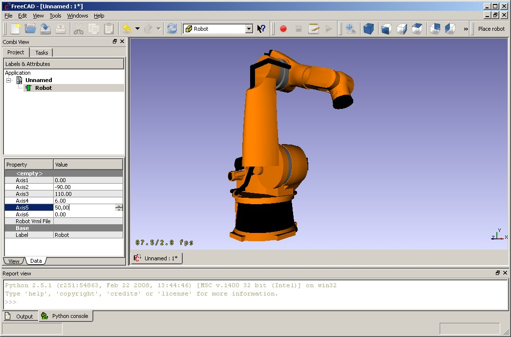

This is the project article for the Robot project. It follows the rules of the Getting things done process. The projects are collected in the Development roadmap.
Purpose and principles
This project should lay down the principal technologies for a realistic robot simulation in FreeCAD. In the first step
it targets the standard 6-axis industrial robot.
Outcome
Robot simulation

Brainstorming
Libs in field
- OROCOSlibs for inverse kinematic
- ROBOOP targets directly to robot simulation, but seems inactive.
- Beremiz a OpenSource PLC.
Standards for communication
- OPC UA to communicate with PLCs
- RRS-II German standard for robot simulation communication
Middleware for comunication
Commercial products in that field
Knowledge
Organizing
- Visual representation of 6-Axis robots (done)
- Forward and inverse kinematic calculation of arbitrary robots (done)
- RobotLib, dynamic readably robot types (work in progress)
- Trajectory simulation (work in progress)
- collision simulation
- detection of configuration changes and singularities
- time estimation
- used volume (planed)
- Post processor for Kuka robots (work in progress)
- Process and work cell control (planed)
- Movie making out of simulation (planed)
Next actions
- Trajectory and Waypoint management.
{kind=link}